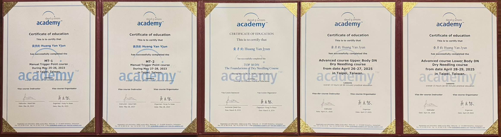

🏅DGSA大全套✅
🏅DGSA大全套✅
Manual Therapy 1 (2023)
Manual Therapy 2 (2023)
Dry Needling Foundations Top 30 (2024)
Dry Needling Advanced Upper Body (2025)
Dry Needling Advanced Lower Body (2025)
大約2年的時間，上課時間10天，但每日都在練習，從基礎到進階，從徒手到乾針，中醫師完全必備的技能，解剖結構到經絡穴道的整合樞紐，就是身為中醫師的我們能夠努力的目標！
雖然就是五張紙，但看到還是滿滿的成就感🤩🤩🤩
感謝引進整套DGSA瑞士🇨🇭官方課程！感謝Josue老師教完我整套的課程🥳 真的是又專業又有耐心又風趣的老師😊
感謝蕭老師與師母Sophia Su對學員們上課時無微不至的照顧，早晨咖啡、課間點心、中午美味便當、隨時都吃不完的點心、茶飲，還有紅酒!!
最後當然也感謝讓我請假去進修的老闆們🫣🫣🫣還有我老婆的支持與我自己持續的努力💪
真的是給自己完成了一個里程碑🏆
#DGSA
#TIFAR
太初中醫診所 東門中醫
中醫師 黃彥鈞
